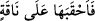

etmek, birisinin ardına oturmak ve birisini ardına oturtmak” şeklindedir. Mesela bir
kimse hayvanının terkisine birisini bindirdiği zaman bunu ifâde etmek için “ahkabe”
denilir. Devenin üzerindeki eğerin arka tarafına binen kimseye, yine binitin arka tarafına
bağlanan her şeye “hıkbe” denilir ve bu eylem aynı kökten türeme “ihtekabe” fiili ile
anlatılır. Herhangi bir kişiyi binitinin arkasına bindiren kimseye de “muhkıb” denilir.
Kelimenin kök yapısını gösteren bir başka örnek hadîs-i şerifte geçen “/onu
devesinin terkisine aldı” ifâdesidir.
Âyetteki “ahkaben” kelimesi “birbirini izleyen çağlar, yıllar boyu” anlamına
gelmektedir. Her bir “hakb” geçtiğinde onu başka bir “hakb” izler ve bu izleme
sonsuzdur. Çünkü hakb kelimesi, Ebu’l-Leys’in işâret ettiği üzere Arapçada hemen
hemen sadece zamanların birbirini izlemesi ve ardarda akıp gitmesi anlamını ifâde
etmek için kullanılır.
Âyette özellikle “ahkaben” kelimesinin zikredilmesi sebebsiz değildir. Çünkü bu
kelime Arapların nezdinde en uzun süreyi ifâde eder. Dolayısıyla Kur’an’da onların
hayallerinin tasavvur edebileceği ve bilebilecekleri en uzun süre kullanılmış, akıllarının
erebileceği bir kelimeyle kendilerilerine hitap edilmiştir. Aslında “ahkaben”
kelimesiyle kasdedilen ebediyet, sonsuzluktur. Dolayısıyla ahkaben kelimesi sonsuzluk
ve ebediyyet anlamının kinaye yoluyla anlatımından başka bir şey değildir. Bu
açıklamalar ışığında âyet-i kerîmeye mânâ vermek gerekirse; “onlar orada ebediyen
kalırlar” denmiş olmaktadır. Nitekim kelimenin bu anlama geldiğine Hz. Ömer’in Hecr
kabilesinden bir kimseye sormuş olduğu şu soru delâlet etmektedir. Hz. Ömer (r.a.) ona
“ahkab”ın ne anlama geldiğini sorar. O da şöyle cevap verir: “Ahkab seksen senedir. Bu
seksen senenin de her bir günü bin senedir.” Araplar, bu kadar büyük bir sayıyla
ebedîliği ve sonsuzluğu kasdediyorlardı.
Mücahid’in; “Ahkab kırk üç hukubdur. Her hukub yetmiş hariftir. Her harif yediyüz
senedir. Her sene üç yüz altmış gündür ve bir gün dünya günleriyle bin yıldır”
şeklindeki ifâdesi de aynı şekildedir. Nitekim İbn Abbas ve İbn Ömer (r.a.)’dan da
böyle rivâyet olunmuştur. Öte yandan bir tek hakb ile yetmişbin sene kasdediliyorsa o
zaman bu senenin bir günü Hasen Basri’den rivâyet edildiği gibi bin yıl olmuş olur.
Râğıb Isfahânî der ki; sahih olanı bir hıkbenin seksen yıl değil belirsiz bir zaman
dilimi olduğudur. Nitekim Kamus’ta ifâde olunduğuna göre “hıkbe” belli bir zaman
dilimidir ancak bunun ne kadar olduğu belli değildir.
Kısacası âyette yer alan “ahkab” sonsuzluğa değil, sonluluğa delâlet eder. Kelime her
ne kadar “cem-i kıllet” kalıbında ise de “hukub” şeklindeki “cem-i kesret” yerindedir.
Veya kelime istiğrak/tüm fertlere şamil olan lamıyla belirli kılınmış “el-ahkab”
yerindedir. Her ne kadar burada azgınların cehennemden çıkacaklarına işâret varsa da
bu mefhum kabilindendir. Dolayısıyla bu işâret, onların cehennemde ebedî kalacaklarını
gösteren açık ifâdeler karşısında tutunamaz. Kâfirlerin cehennemde ebedî kalacaklarına
örnek olmak üzere şu âyet-i kerîmeyi zikredebiliriz: “Ateşten çıkmak isterler, fakat